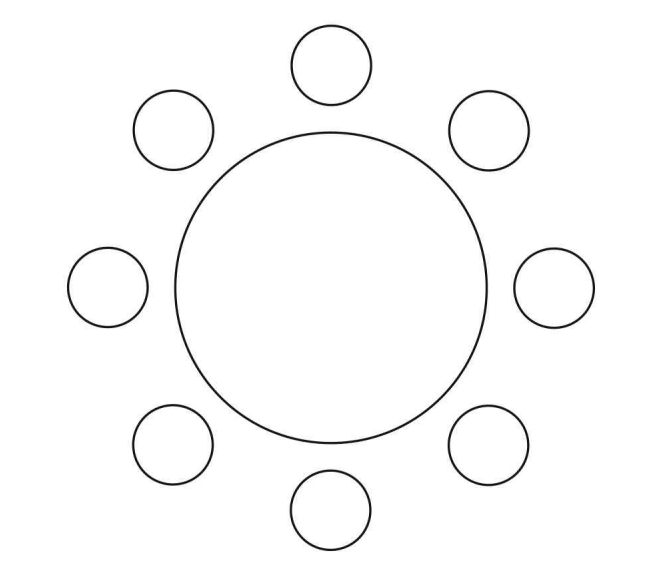

학생 를 포함한 명의 학년 학생과 학생 를 포함한 명의 학년 학생이 있다. 이 명의 학생이 일정한 간격을 두고 원 모양의 탁자에 다음 조건을 만족시키도록 모두 둘러앉는 경우의 수를 구하시오. (단, 회전하여 일치하는 것은 같은 것으로 본다.)
[4점]
(가) 각 학생은 자신과 이웃한 두 학생 중 적어도 한 명과 같은 학년이다.
(나) 와 는 이웃하지 않는다.

판단(가)는 다른 학년 둘 사이에 혼자 끼어 앉으면 안 된다는 뜻이야. 그래서 같은 학년이 두 명 이상씩 붙은 묶음으로 자리를 보면 돼.
원을 한 바퀴 돌면 2학년 묶음 다음엔 꼭 3학년 묶음이 오니까 두 학년의 묶음 수가 같은 거야.
묶음마다 적어도 2명이니까 2학년 4명으로는 묶음이 많아야 두 개야. 학년 모양은 이 두 가지뿐이고 서로 겹치지 않아.
주의원탁은 회전해서 같은 배치를 하나로 세니까 A 자리를 기준으로 잡아. 그러면 나머지 7자리는 A에서 몇 칸째인지로 서로 구별돼.
(I)에서 A가 2학년 묶음의 첫째부터 넷째 중 어디인지 정하면 2학년 4자리가 정해져. 남은 2학년 3명은 , 3학년 4명은 로 앉히면 돼.
(II)는 A와 같은 묶음인 2학년 한 명이 A의 오른쪽인지 왼쪽인지만 고르면 2칸씩 번갈아 학년이 정해지는 거야.
판단(나)를 직접 세는 것보다 A, B가 이웃하는 배치를 (가) 전체에서 빼는 게 편해.
주의B는 3학년이니까 A 옆에 오려면 그 자리가 3학년 자리여야 해. A가 2학년 묶음 가운데 있으면 양옆이 2학년이라 B가 올 수 없어.
(I)에서 A가 묶음 끝이면 바깥쪽 옆, (II)에서는 짝의 반대쪽 옆, 이렇게 한 곳만 3학년 자리야. 그래서 B는 그 자리로 정해지고 나머지 학생만 줄 세우면 돼.
세어 넣은 배치 하나를 골라 두 조건을 다시 대 보는 거야. 0번과 1번, 2번과 3번처럼 짝마다 같은 학년이 붙어 있지?